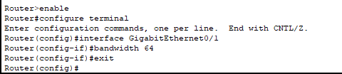
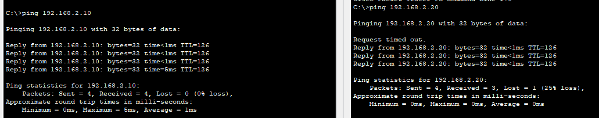
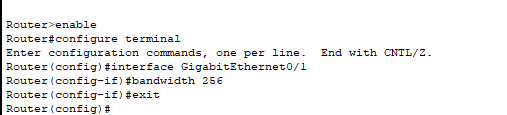
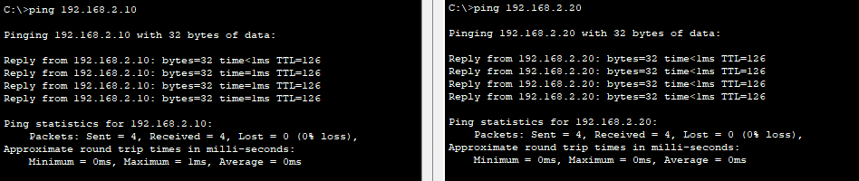

Bandwidth Saturation Issue
Problem Description
Issue Overview:
Bandwidth saturation occurs when the demand for network bandwidth exceeds the available capacity, resulting in network congestion. This multi-layer issue affects data transmission at the physical layer, while also impacting higher-level protocols and applications. When bandwidth becomes saturated, users experience slow network performance, packet loss, and increased latency.
Common Symptoms:
- Slow network response times
- Intermittent packet loss
- High latency (ping times)
- Application timeouts
- Poor quality for real-time applications (VoIP, video)
- Inconsistent network performance
Root Causes:
- Insufficient bandwidth for network requirements
- Bandwidth-intensive applications
- Network bottlenecks at critical links
- Lack of traffic prioritization (QoS)
- Improper network design
- Broadcast storms or other network anomalies
Network Setup
Network Components:
- 2x Cisco 2911 Routers (Router0 and Router1)
- 2x Cisco 2960-24TT Switches (Switch0 and Switch1)
- 4x Client PCs (PC0, PC1, PC2, PC3)
Network Design:
- Router0 connects to Switch0 (LAN1: 192.168.1.0/24)
- Router1 connects to Switch1 (LAN2: 192.168.2.0/24)
- Router0 and Router1 are connected via a limited bandwidth link (10.0.0.0/30)
- PC0 and PC1 are on LAN1
- PC2 and PC3 are on LAN2
Router Configuration
Router>enable
Router#configure terminal
Router(config)#interface GigabitEthernet0/0
Router(config-if)#ip address 192.168.1.1 255.255.255.0
Router(config-if)#no shutdown
Router(config-if)#exit
Router(config)#interface GigabitEthernet0/1
Router(config-if)#ip address 10.0.0.1 255.255.255.252
Router(config-if)#no shutdown
Router(config-if)#exitRouter0 is configured with IP address 192.168.1.1/24 for the LAN interface and 10.0.0.1/30 for the WAN interface.
Router>enable
Router#configure terminal
Router(config)#ip route 192.168.2.0 255.255.255.0 10.0.0.2
Router(config)#exitStatic routes are configured on both routers to enable communication between the two LANs.
Problem Demonstration
Bandwidth Limitation Configuration:
The bandwidth between Router0 and Router1 is limited to 64 Kbps, creating a bottleneck:
Router>enable
Router#configure terminal
Router(config)#interface GigabitEthernet0/1
Router(config-if)#bandwidth 64
Router(config-if)#exitThis bandwidth limitation simulates a low-capacity WAN link that can easily become saturated.
Bandwidth Saturation Effects:
When multiple hosts attempt to communicate across the limited bandwidth link:
- PC0 to PC2 ping shows variable response times (left)
- PC1 to PC3 ping shows packet loss (25% loss) due to bandwidth saturation (right)
This demonstrates how insufficient bandwidth causes packet loss and inconsistent performance.
Solution Steps
Step 1: Identify the Bandwidth Bottleneck
First, identify where bandwidth saturation is occurring by checking interface statistics and monitoring network performance:
- Observe packet loss and high latency in ping tests
- Check router interface statistics for high utilization
- Identify the link with insufficient bandwidth (in this case, the inter-router link)
Step 2: Increase Available Bandwidth

Router>enable
Router#configure terminal
Router(config)#interface GigabitEthernet0/1
Router(config-if)#bandwidth 256
Router(config-if)#exitThe bandwidth is increased from 64 Kbps to 256 Kbps on both routers' WAN interfaces. In a real-world scenario, this might involve:
- Upgrading physical links or service provider plans
- Adding additional links for load balancing
- Implementing link aggregation where possible
Step 3: Implement QoS (Quality of Service)
In addition to increasing bandwidth, implementing QoS can help prioritize critical traffic:
! Example QoS configuration (not implemented in this simulation)
Router(config)#class-map match-all CRITICAL-TRAFFIC
Router(config-cmap)#match protocol icmp
Router(config-cmap)#exit
Router(config)#policy-map QOS-POLICY
Router(config-pmap)#class CRITICAL-TRAFFIC
Router(config-pmap-c)#priority 64
Router(config-pmap-c)#exit
Router(config-pmap)#class class-default
Router(config-pmap-c)#fair-queue
Router(config-pmap-c)#exit
Router(config)#interface GigabitEthernet0/1
Router(config-if)#service-policy output QOS-POLICYQoS policies prioritize important traffic during congestion, ensuring critical applications receive necessary bandwidth.
Verification and Testing
Improved Network Performance:
After increasing the bandwidth:
- PC0 to PC2 ping shows consistent, low response times (left)
- PC1 to PC3 ping shows no packet loss (0% loss) and lower latency (right)
The network now has sufficient bandwidth to handle multiple simultaneous communications without degradation.
Troubleshooting Guide
Common Bandwidth Issues and Solutions:
- Issue: High utilization on specific links
Solution: Upgrade bandwidth or implement load balancing - Issue: Specific applications consuming excessive bandwidth
Solution: Implement traffic shaping or rate limiting for those applications - Issue: Critical applications suffering during congestion
Solution: Implement QoS to prioritize important traffic - Issue: Intermittent bandwidth saturation
Solution: Schedule bandwidth-intensive tasks during off-peak hours
Verification Commands:
show interfaces- View interface statistics including bandwidth utilizationshow policy-map interface- Check QoS policy effectivenessping- Test basic connectivity and latencytraceroute- Identify where delays occur in the path
Best Practices
- Regularly monitor bandwidth utilization across the network
- Implement QoS to prioritize critical applications
- Design networks with appropriate bandwidth for current and future needs
- Consider traffic patterns when planning network capacity
- Use traffic shaping and policing to control bandwidth usage
- Implement caching and compression where appropriate
- Educate users about bandwidth-intensive applications
- Consider WAN optimization technologies for critical links
Packet Tracer Simulation
Download the complete Packet Tracer simulation file to practice this configuration:
Download Simulation File